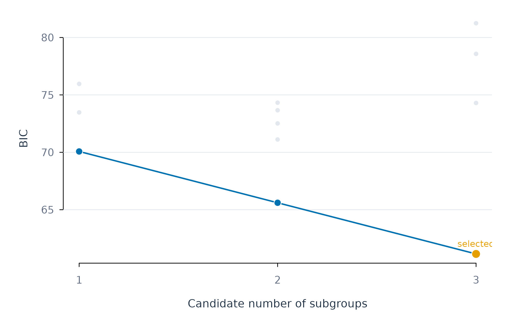
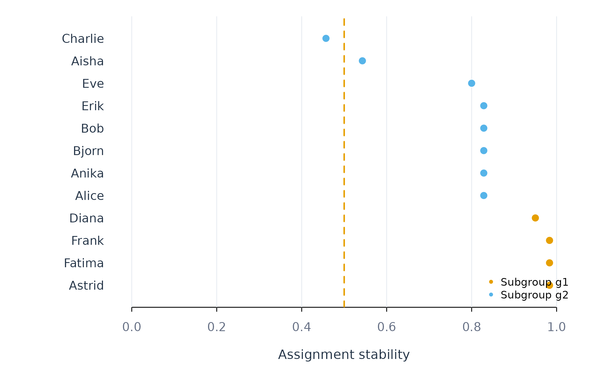
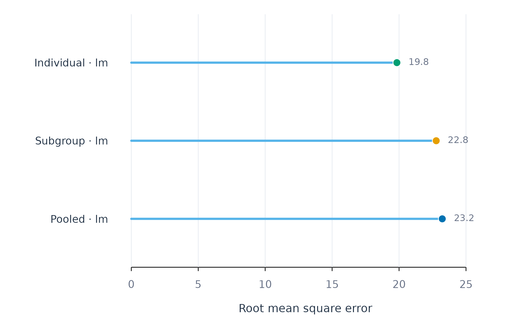
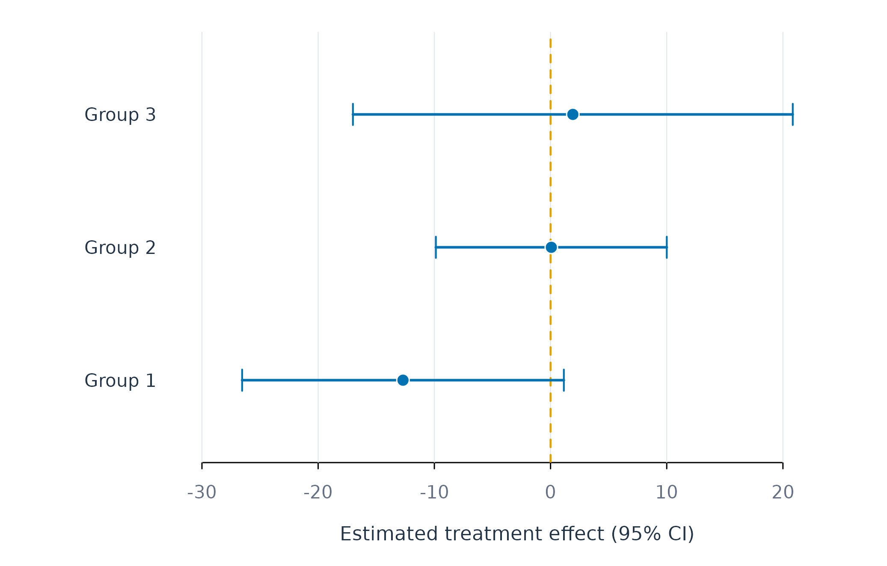
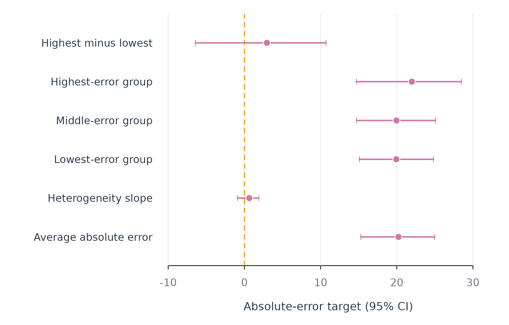

Subgroups, Treatment Effects, and Heterogeneity
Source:vignettes/subgroups-effects.Rmd
subgroups-effects.RmdThese functions ask whether and how people differ. Subgroup work has
three stages: test_subgroups() asks whether a discrete
representation is supported at all, find_subgroups()
assigns people, and fit_subgroups() tests whether
group-specific models improve held-out prediction.
fit_effects() estimates a treatment effect and whether it
varies, and fit_heterogeneity() provides repeated-split
inference about any person-varying target.
| Question | Function |
|---|---|
| Is a discrete subgroup representation supported at all? | test_subgroups() |
| Which people share a reproducible coefficient profile? | find_subgroups() |
| Does subgroup-specific modelling improve held-out performance? | fit_subgroups() |
| What is the treatment effect, and who benefits more? | fit_effects() |
| Is a person-varying target predictably heterogeneous? | fit_heterogeneity() |
Every example uses the same 12 learners from the bundled
srl data, so results can be compared across sections.
test_subgroups()
Analytic question
test_subgroups() asks whether person-specific
coefficient vectors are better represented by one population or by
several discrete groups. The function takes a repeated-measures
regression problem and a maximum group count. It returns a selected
count, an evidence label, distribution-shape diagnostics, and a tidy BIC
table.
test_subgroups() fits person-specific regressions and
compares Gaussian mixtures with one through k_max
components. The search covers several covariance structures. Bayesian
information criterion balances mixture fit against model complexity. A
clustering algorithm always returns a partition when asked for one. This
test allows one population to remain the selected answer.
Test one through three groups
test_subgroups() assesses efficacy and monitoring slopes
across 12 learners. The printed object states the selected group count
and evidence relative to one group.
subgroup_test <- test_subgroups(analysis_data, y = "effort", x = c("efficacy", "monitoring"), id = "name", time = "day", k_max = 3)
subgroup_test
#> Idiographic Subgroup Test
#> People: 12
#> Coefficients: efficacy, monitoring
#> Searched: k = 1..3, covariance models VVV/EEE/EEI/EII/VII/VVI
#>
#> VERDICT: 3 subgroups (BIC beats one group by 8.9: strong evidence)
#>
#> Use as.data.frame() for the BIC table.test_subgroups() selects three groups for this
12-learner subset. The printed verdict reports a BIC improvement of
about 8.9 over the one-group model. This result supports further
inspection of a three-group representation. It does not assign learners
to groups.
Inspect the model-selection table
as.data.frame() returns the BIC search as one row per
fitted mixture. Table 1 marks the selected row.
as.data.frame(subgroup_test)
#> k model loglik npar bic selected
#> 1 3 VVV -9.453076 17 61.14956 TRUE
#> 2 2 VVV -19.136141 11 65.60625 FALSE
#> 3 1 EEE -28.824924 5 70.07438 FALSE
#> 4 1 VVV -28.824924 5 70.07438 FALSE
#> 5 2 EEE -25.619379 8 71.11801 FALSE
#> 6 2 EEI -27.543610 7 72.48157 FALSE
#> 7 2 EII -28.803440 6 72.51632 FALSE
#> 8 1 EII -33.010388 3 73.47550 FALSE
#> 9 1 VII -33.010388 3 73.47550 FALSE
#> 10 2 VVI -25.649851 9 73.66386 FALSE
#> 11 3 EEI -24.723329 10 74.29572 FALSE
#> 12 2 VII -28.463607 7 74.32156 FALSE
#> 13 1 EEI -33.010388 4 75.96040 FALSE
#> 14 1 VVI -33.010388 4 75.96040 FALSE
#> 15 3 EEE -25.619384 11 78.57274 FALSE
#> 16 3 VVI -23.226589 14 81.24187 FALSEas.data.frame() reports a minimum BIC of about 61.1 for
the selected three-component model in Table 1. The best one-component
model has a BIC of about 70.1. Model selection depends on the
coefficient distribution and the number of learners.
Plot the BIC comparison
The figure shows every fitted covariance model faintly and connects the best BIC at each candidate group count. This separates the group-count decision from the nuisance choice of covariance structure.
bic_table <- as.data.frame(subgroup_test)
best_by_k <- aggregate(bic ~ k, data = bic_table, min)
figure_begin()
plot(bic_table$k, bic_table$bic, pch = 21, bg = fig_col["grid"],
col = "white", cex = 1.0, xaxt = "n",
xlab = "Candidate number of subgroups", ylab = "BIC")
figure_grid(x = FALSE, y = TRUE)
lines(best_by_k$k, best_by_k$bic, col = fig_col["blue"], lwd = 2)
points(best_by_k$k, best_by_k$bic, pch = 21, bg = fig_col["blue"],
col = "white", cex = 1.35)
selected <- subset(bic_table, selected)
points(selected$k, selected$bic, pch = 21, bg = fig_col["orange"],
col = "white", cex = 1.65)
text(selected$k, selected$bic, "selected", pos = 3, cex = 0.75,
col = fig_col["orange"])
axis(1, at = sort(unique(bic_table$k)))
Figure 1. Bayesian information criterion across candidate subgroup models.
Figure 1 places the selected three-group solution at the global BIC minimum. The faint points show that covariance assumptions materially affect the score; the connected blue series shows the best available evidence for each group count. Lower BIC indicates the preferred fit-complexity trade-off.
Assumptions and failure checks
test_subgroups() assumes that the person-specific
coefficient distribution can be compared with Gaussian mixtures.
Skewness and heavy tails can produce apparent classes when the
population is continuous. Bauer and Curran describe this overextraction
problem for mixture models (Bauer and Curran 2003). The returned
shape diagnostics should therefore accompany the BIC result.
test_subgroups() needs more people than candidate
components and enough observations to estimate each person’s slopes. A
selected class count is sample-dependent. Replication or stability
analysis is needed before treating classes as substantive
categories.
find_subgroups()
Analytic question
find_subgroups() assigns people to subgroups based on
person-specific effects, prediction errors, repeated splits, moderators,
or mixtures of regressions. The function takes a repeated-measures
regression problem, a method, a group count, and a resampling count. It
returns group assignments and assignment stability for each person.
find_subgroups() uses effect clustering here. The method
estimates each learner’s regression coefficients and clusters those
coefficient vectors. Repeated resamples assess whether each learner
returns to the same group. Stability measures reproducibility of the
partition. It does not test whether separate populations exist.
Estimate a two-group partition
find_subgroups() clusters efficacy and monitoring
effects into two groups. Twenty resamples provide an
assignment-stability estimate.
subgroup_result <- find_subgroups(analysis_data, y = "effort", x = c("efficacy", "monitoring"), id = "name", method = "effect_clustering", k = 2, reps = 20, time = "day")
subgroup_result
#> Idiographic Subgroups
#> Method: effect_clustering
#> Subgroups: 2
#> People: 12
#> Sizes: g1=4, g2=8
#> Stability: 0.82 (how reproducible the partition is --
#> NOT evidence that the subgroups are real)
#>
#> Existence: not tested. Use test_subgroups() to ask whether any
#> subgroups exist before trusting this partition.
#>
#> Use groups(), test_subgroups(), fit_subgroups()find_subgroups() returns two groups and reports their
sizes. The print method also states that existence was not tested
because k = 2 was supplied. A stable forced partition can
occur in a population without discrete classes.
Inspect assignments
groups() returns one row per learner with the subgroup,
method, stability, and number of assignments. Table 2 sorts through the
public sort_by argument.
groups(subgroup_result, sort_by = "subgroup")
#> subject subgroup method stability n_assignments
#> 1 Astrid g1 effect_clustering 0.9833333 20
#> 2 Diana g1 effect_clustering 0.9500000 20
#> 3 Fatima g1 effect_clustering 0.9833333 20
#> 4 Frank g1 effect_clustering 0.9833333 20
#> 5 Aisha g2 effect_clustering 0.5428571 20
#> 6 Alice g2 effect_clustering 0.8285714 20
#> 7 Anika g2 effect_clustering 0.8285714 20
#> 8 Bjorn g2 effect_clustering 0.8285714 20
#> 9 Bob g2 effect_clustering 0.8285714 20
#> 10 Charlie g2 effect_clustering 0.4571429 20
#> 11 Erik g2 effect_clustering 0.8285714 20
#> 12 Eve g2 effect_clustering 0.8000000 20groups() shows which learners share a coefficient
pattern in Table 2. Stability values near one indicate consistent
reassignment across resamples. Values near the two-group chance level of
0.5 indicate uncertain membership.
Plot assignment stability
plot_subgroups() colours learners by subgroup and draws
the chance-level reference. Figure 2 orders learners within subgroup by
stability.
plot_subgroups(subgroup_result)
Figure 2. Resampling stability of each learner’s two-group assignment.
Figure 2 identifies learners whose assignments are stable and learners near the chance reference. Uncertain memberships should not be used as fixed labels without sensitivity analysis.
Mixture of regressions
method = "mixture_regression" fits a finite mixture of
regressions by EM with the person as the mixing unit (Leisch 2004).
Every row a learner contributes counts towards that learner’s likelihood
under each component, so learners are assigned whole. The method does
not require a separate regression per person, so it can place people
whose series are too short to support one.
mixture_result <- find_subgroups(analysis_data, y = "effort", x = c("efficacy", "monitoring"), id = "name", method = "mixture_regression", k = 2, reps = 20, time = "day")
groups(mixture_result, sort_by = "subgroup")
#> subject subgroup method stability n_assignments posterior
#> 1 Anika g1 mixture_regression 0.9666667 20 1.0000000
#> 2 Bjorn g1 mixture_regression 0.9666667 20 1.0000000
#> 3 Charlie g1 mixture_regression 0.9750000 20 1.0000000
#> 4 Erik g1 mixture_regression 0.9750000 20 1.0000000
#> 5 Eve g1 mixture_regression 0.9750000 20 1.0000000
#> 6 Fatima g1 mixture_regression 0.9666667 20 1.0000000
#> 7 Frank g1 mixture_regression 0.9750000 20 1.0000000
#> 8 Aisha g2 mixture_regression 0.9250000 20 1.0000000
#> 9 Alice g2 mixture_regression 0.9375000 20 1.0000000
#> 10 Astrid g2 mixture_regression 0.8250000 20 0.9999999
#> 11 Bob g2 mixture_regression 0.9250000 20 1.0000000
#> 12 Diana g2 mixture_regression 0.9375000 20 1.0000000groups() gains a posterior column for this
method. It reports how probable each assignment is under the fitted
mixture, which is a stronger statement than how often a partition
reproduces under resampling. Here every posterior is effectively
one.
as.data.frame() returns the component regressions, one
row per subgroup and term, with the mixing share and the residual
standard deviation.
as.data.frame(mixture_result, what = "components")
#> subgroup share sigma term estimate
#> 1 g1 0.5833333 24.01878 (Intercept) 23.27622267
#> 2 g1 0.5833333 24.01878 efficacy 0.33434946
#> 3 g1 0.5833333 24.01878 monitoring 0.15133383
#> 4 g2 0.4166667 19.22837 (Intercept) 53.17388225
#> 5 g2 0.4166667 19.22837 efficacy 0.34052096
#> 6 g2 0.4166667 19.22837 monitoring -0.06565812The two components differ mainly in their intercepts, about 53 and 23 effort points. Their efficacy slopes are nearly identical, about 0.34 and 0.33. The mixture has therefore separated learners by typical effort level rather than by how efficacy relates to effort. A level difference of this kind is also visible in a between-person analysis and does not by itself indicate distinct within-person processes.
The mixture’s own BIC is not allowed to choose the number of groups.
With k = "auto", find_subgroups() defers to
test_subgroups() and reports the mixture’s BIC sweep only
for comparison.
mixture_auto <- find_subgroups(analysis_data, y = "effort", x = c("efficacy", "monitoring"), id = "name", method = "mixture_regression", k = "auto", reps = 20, time = "day")
as.data.frame(mixture_auto, what = "bic")
#> k loglik n_par bic
#> 1 1 -8591.629 4 17213.39
#> 2 2 -8419.352 9 16906.49
#> 3 3 -8393.315 14 16892.08
#> 4 4 -8360.845 19 16864.80
#> 5 5 -8331.509 24 16843.79
#> 6 6 -8308.892 29 16836.21The mixture BIC decreases at every step up to the largest candidate,
six components, whereas test_subgroups() selected three. A
mixture of regressions fits continuous variation in intercepts and
slopes better with more components, and its BIC cannot distinguish that
from genuine classes (Bauer and Curran 2003). This is why the
group count is delegated to the existence test.
Assumptions and failure checks
find_subgroups() assumes that its feature representation
corresponds to the scientific definition of similarity. Effect
clustering groups coefficient patterns. Error clustering groups
prediction-error patterns. Model trees use person-level moderators.
These methods answer different questions and can produce different
partitions.
find_subgroups() requires enough people per requested
group and enough observations to estimate person features. Coefficient
skewness can create apparent classes (Bauer and Curran 2003).
k = "auto" delegates the group count to
test_subgroups() and can return one population.
fit_subgroups()
Analytic question
fit_subgroups() fits one model per discovered or
supplied subgroup and can compare those models with pooled and
individual alternatives. The function takes a panel, outcome,
predictors, person identifier, subgroup mapping, and model family. It
returns an idiographic_fit with the usual tidy
accessors.
fit_subgroups() defaults to scope = "all".
The pooled scope estimates one coefficient vector. The subgroup scope
estimates one vector per group. The individual scope estimates one
vector per person. All scopes predict the same ordered test rows.
Estimate subgroup assignments
find_subgroups() supplies a two-group effect-clustering
result. This first stage defines the subgroup mapping used by the fitted
models.
subgroup_result <- find_subgroups(analysis_data, y = "effort", x = c("efficacy", "monitoring"), id = "name", method = "effect_clustering", k = 2, reps = 20, time = "day")
groups(subgroup_result, sort_by = "subgroup")
#> subject subgroup method stability n_assignments
#> 1 Astrid g1 effect_clustering 0.9833333 20
#> 2 Diana g1 effect_clustering 0.9500000 20
#> 3 Fatima g1 effect_clustering 0.9833333 20
#> 4 Frank g1 effect_clustering 0.9833333 20
#> 5 Aisha g2 effect_clustering 0.5428571 20
#> 6 Alice g2 effect_clustering 0.8285714 20
#> 7 Anika g2 effect_clustering 0.8285714 20
#> 8 Bjorn g2 effect_clustering 0.8285714 20
#> 9 Bob g2 effect_clustering 0.8285714 20
#> 10 Charlie g2 effect_clustering 0.4571429 20
#> 11 Erik g2 effect_clustering 0.8285714 20
#> 12 Eve g2 effect_clustering 0.8000000 20groups() reports assignments and their resampling
stability in Table 3. These labels are estimated quantities. Prediction
comparisons should retain that first-stage uncertainty in their
interpretation.
Fit and compare three scopes
fit_subgroups() fits linear models for all three scopes.
Table 4 reports aggregate held-out metrics.
subgroup_fit <- fit_subgroups(analysis_data, y = "effort", x = c("efficacy", "monitoring"), id = "name", subgroup = subgroup_result, method = "lm", time = "day")
metrics(subgroup_fit, overall = TRUE)
#> scope model estimator subject subgroup n rmse mae bias
#> 1 pooled lm native .overall .all 384 23.22627 18.97802 0.4108068
#> 2 subgroup lm native .overall .all 384 22.77474 18.75270 0.4693698
#> 3 individual lm native .overall .all 384 19.83725 15.68630 0.5814738
#> r_squared
#> 1 0.2897850
#> 2 0.3171306
#> 3 0.4819235fit_subgroups() gives the subgroup models an RMSE of
about 22.8 in Table 4. The pooled RMSE is about 23.2, and the individual
RMSE is about 19.8. The two-group model improves modestly over pooling
but does not match the individual models on this split.
Plot the scope comparison
plot_metrics() displays the common held-out metric for
pooled, subgroup, and individual scopes. Position and colour distinguish
the modelling scopes.
plot_metrics(subgroup_fit, metric = "rmse")
Figure 3. Held-out RMSE for pooled, subgroup, and individual linear models.
Figure 3 shows the subgroup model between the pooled and individual models in prediction error. The result quantifies the compromise between one model for everyone and one model per person.
Assumptions and failure checks
fit_subgroups() treats the supplied mapping as fixed
during model fitting. Assignments estimated from the same outcome data
can make subgroup performance optimistic. A confirmatory analysis should
derive groups in separate data or repeat the complete
discovery-and-fitting pipeline within resampling.
fit_subgroups() requires at least one usable training
and test set for each requested scope. Small groups can fail even when
pooled and individual models succeed. The failure table identifies these
cases. Subgroup prediction does not by itself show that discrete
populations exist.
fit_effects()
Analytic question
fit_effects() estimates average and heterogeneous
effects for binary, multi-arm, or continuous treatments. The function
takes an outcome, treatment, covariates, person identifier, optional
time order, and model controls. It returns an
idiographic_effects object with tidy effect estimates,
predictions, metrics, and failures.
fit_effects() uses augmented inverse-probability
weighting for binary and multi-arm treatments (Bang and Robins 2005). Outcome and
propensity models are estimated on training rows and applied to held-out
rows. Continuous treatments use a partially linear residualization score
(Chernozhukov et
al. 2018).
Define the illustrative contrast
fit_effects() treats days above the median monitoring
score as the exposed condition. The bundled data are observational and
contain no randomized treatment. The example therefore illustrates
estimation and diagnostics. It does not identify a causal effect of
monitoring.
fit_effects() adjusts for efficacy, planning, and
control at the pooled scope. Three sorted effect groups summarize
estimated heterogeneity.
effect_fit <- fit_effects(analysis_data, y = "effort", treatment = "high_monitoring", x = c("efficacy", "planning", "control"), id = "name", time = "day", scope = "pooled", n_groups = 3)
effects(effect_fit)
#> scope model estimator subject subgroup effect contrast n
#> 1 pooled linear native .all .all ATE 1 vs 0 564
#> 2 pooled linear native .all .all GATES:g1 1 vs 0 188
#> 3 pooled linear native .all .all GATES:g2 1 vs 0 188
#> 4 pooled linear native .all .all GATES:g3 1 vs 0 188
#> 5 pooled linear native .all .all GATES:top-bottom 1 vs 0 376
#> 6 pooled linear native .all .all BLP:heterogeneity 1 vs 0 564
#> n_people estimate std_error conf_low conf_high statistic p_value
#> 1 12 -3.57078063 4.959188 -14.4858795 7.344318 -0.72003335 0.48652270
#> 2 12 -12.69849520 6.290019 -26.5427337 1.145743 -2.01883257 0.06855353
#> 3 12 0.06728784 4.514504 -9.8690693 10.003645 0.01490481 0.98837502
#> 4 12 1.91886547 8.598972 -17.0073435 20.845074 0.22315058 0.82750812
#> 5 12 14.61736068 10.007818 -7.4096973 36.644419 1.46059423 0.17209304
#> 6 12 1.17193306 0.966670 -0.9556933 3.299559 1.21234037 0.25077815effects() reports an average contrast of about -3.7 in
Table 5. Its confidence interval includes zero. The top-minus-bottom
sorted-group contrast is about 15.1, and its interval also includes
zero. The BLP heterogeneity interval includes zero. This analysis does
not provide evidence of a stable effect difference across the sorted
groups.
Plot sorted effect groups
plot_effects() draws each GATES estimate with its
confidence interval. Figure 4 orders groups from the lowest to highest
predicted effect and marks zero with an orange reference line.
plot_effects(effect_fit, scope = "pooled")
Figure 4. Sorted high-monitoring contrasts and confidence intervals.
Figure 4 shows overlapping intervals across the three groups. The ordering was learned from the data, while the displayed group estimates use held-out scores. Wide intervals reflect uncertainty across 12 learners.
Identification assumptions and failure checks
fit_effects() requires consistency, positivity, and
conditional exchangeability for a causal interpretation. Positivity
requires both treatment conditions across relevant covariate patterns.
Conditional exchangeability requires that the supplied covariates block
treatment-outcome confounding. The observational teaching contrast
cannot verify that condition.
fit_effects() removes rows with a missing treatment
before it constructs the temporal split. Missing outcomes and predictors
are handled by the shared complete-case split. A person can still enter
the failure table when too few usable training or test rows remain.
fit_effects() trims estimated propensities away from
zero and one. Severe trimming indicates poor overlap and changes the
effective target population. AIPW tolerates misspecification of one
nuisance model under its regularity conditions. Misspecifying both
outcome and propensity models can bias the estimate.
fit_heterogeneity()
Analytic question
fit_heterogeneity() tests whether a person-varying
quantity differs systematically across people. The target can be a
treatment effect, prediction error, or gain from individual rather than
pooled modelling. The function returns repeated-split estimates, sorted
groups, a heterogeneity slope, characteristics of extreme groups, and
learner-selection criteria.
fit_heterogeneity() separates proxy learning from
inference. One sample learns a machine-learning proxy for the
person-varying target. A held-out sample estimates average, grouped, and
heterogeneity quantities. Repeating and aggregating the split reduces
dependence on one random partition (Chernozhukov et al. 2020).
Standard errors cluster observations by person.
Study heterogeneity in prediction error
fit_heterogeneity() asks whether effort prediction error
varies predictably across learners. Linear and ridge proxies compete
over ten person-level random splits. Three sorted groups range from
lower to higher error.
heterogeneity_fit <- fit_heterogeneity(analysis_data, y = "effort", x = c("efficacy", "monitoring", "planning"), id = "name", target = "error", model = c("linear", "ridge"), num_splits = 10, n_groups = 3)
heterogeneity(heterogeneity_fit)
#> target model effect estimate std_error conf_low conf_high
#> 1 error ridge average 20.2253550 1.7855913 15.2771405 24.96474
#> 2 error ridge heterogeneity 0.6435549 0.5969202 -0.8915956 1.88939
#> 3 error ridge group:g1 19.9370663 2.1115599 15.0984244 24.79795
#> 4 error ridge group:g2 19.9644428 2.0247641 14.7204603 25.09312
#> 5 error ridge group:g3 21.9773560 2.8928578 14.6957330 28.46461
#> 6 error ridge group:top-bottom 2.9556581 3.0949341 -6.4277446 10.72051
#> p_value n n_people splits
#> 1 0.0001857984 933 6 10
#> 2 0.5792993199 933 6 10
#> 3 0.0004026063 933 6 10
#> 4 0.0003792906 933 6 10
#> 5 0.0012330464 933 6 10
#> 6 0.8202282399 933 6 10heterogeneity() reports an average absolute prediction
error of about 20.2 in Table 6. The highest-minus-lowest group contrast
is about 3.0, and its interval includes zero. The heterogeneity slope
interval also includes zero. The analysis does not find stable,
predictable error heterogeneity in this 12-learner subset.
Describe and compare learned proxies
clan() compares predictor means between extreme target
groups. learners() reports the criterion used to select the
proxy model.
clan(heterogeneity_fit)
#> target model variable estimate std_error conf_low conf_high p_value
#> 1 error ridge efficacy -25.86529 8.736283 -42.19034 -5.789263 0.1280360561
#> 2 error ridge monitoring -52.86498 5.479528 -63.46382 -42.450660 0.0004350839
#> 3 error ridge planning -30.30356 5.186209 -39.11614 -30.308775 0.0084234023
#> n n_people splits
#> 1 622 6 10
#> 2 622 6 10
#> 3 622 6 10
learners(heterogeneity_fit)
#> model lambda lambda_bar
#> 1 ridge 2.167416 409.5028
#> 2 linear 2.152740 409.5413clan() reports descriptive differences between extreme
predicted-error groups in Table 7. These differences describe the fitted
grouping and do not identify causes of prediction error.
learners() selects ridge by a small criterion difference in
Table 8.
Plot the heterogeneity estimates
The coefficient-and-interval display includes the average, heterogeneity slope, sorted groups, and extreme-group contrast. Unlike a point-only plot, it keeps the uncertainty required for the substantive conclusion.
heterogeneity_table <- heterogeneity(heterogeneity_fit)
heterogeneity_labels <- c(
average = "Average absolute error",
heterogeneity = "Heterogeneity slope",
`group:g1` = "Lowest-error group",
`group:g2` = "Middle-error group",
`group:g3` = "Highest-error group",
`group:top-bottom` = "Highest minus lowest"
)
labels <- unname(heterogeneity_labels[heterogeneity_table$effect])
forest_plot(heterogeneity_table$estimate, heterogeneity_table$conf_low,
heterogeneity_table$conf_high, labels,
xlab = "Absolute-error target (95% CI)", colour = fig_col["purple"])
Figure 5. Repeated-split estimates for average error and error heterogeneity.
Figure 5 shows similar estimates for the three error groups and wide uncertainty for their contrast. The heterogeneity-slope and highest-minus-lowest intervals cross zero, so this analysis does not establish systematic error heterogeneity.
Assumptions and failure checks
fit_heterogeneity() treats people as independent
clusters for the default person split. The number of independent people
limits precision even when each person contributes many rows. More
random splits reduce split sensitivity but do not create additional
independent units.
fit_heterogeneity() uses random rather than time-ordered
splits because its target is cross-person heterogeneity. The
gain target changes to occasion splits so each person
appears in both modelling samples. Forecast evaluation should use
fit_rolling() instead. A causal interpretation of the
cate target requires the same identification assumptions as
fit_effects().
Choosing among these functions
Use test_subgroups() first: it decides whether more than
one population is supported, and a one-group answer is a valid
conclusion. Use find_subgroups() to assign people only
after the representation and group count are justified, and
fit_subgroups() to test whether group-specific models
improve held-out prediction relative to pooled and individual models. A
clustering algorithm always partitions the data when asked; skewness,
heavy tails, and continuous heterogeneity can all resemble discrete
groups.
Use fit_effects() when the target is an average or
person-varying treatment effect and the design supports causal
identification. Use fit_heterogeneity() for repeated-split
inference about a treatment effect, prediction error, or the gain from
individual modelling. Use fit_lm() for conditional
association and fit_rolling() for change in prediction
performance over time.